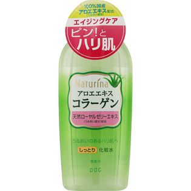

返回列表
产品名称：ナチュリナ しっとり化粧水 本体

ｐｄｃ ナチュリナ しっとり化粧水 本体 １９０ｍｌ
メーカー ｐｄｃ
JANコード 4961989115221
商品の特徴
○30mL増量
○無香料
- 成分・分量
- ＜成分＞水、BG、グリセリン、アロエベラエキス－１、加水分解コラーゲン、水溶性コラーゲン、ローヤルゼリーエキス、ヒアルロン酸Ｎａ、クエン酸、クエン酸Na、ＰＥＧ－６、ＰＥＧ－３２、ＰＥＧ－４０水添ヒマシ油、イソセテス－２０、エタノール、エチドロン酸、フェノキシエタノール、メチルパラベン、黄４、緑２０１
- 用法及び用量
- ＜使用方法＞
洗顔後、適量をコットンまたは手のひらにとり、お肌になじませてください。